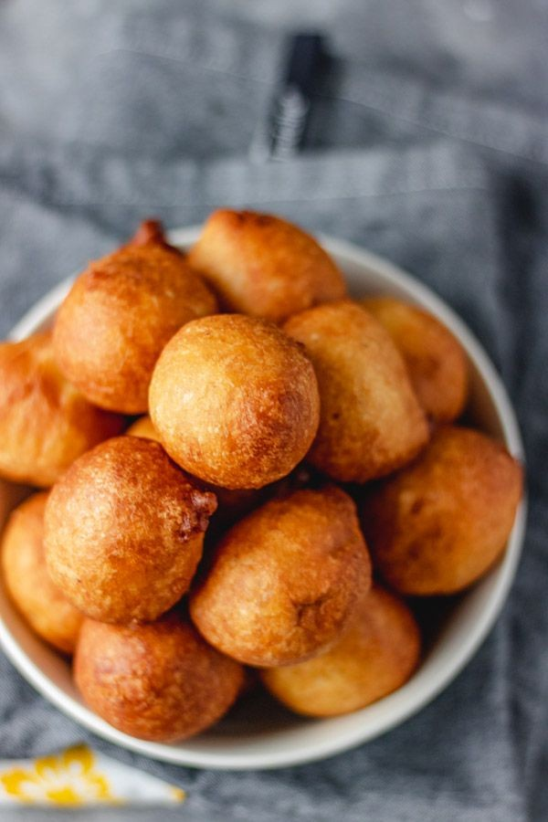

Yadah's Yummy Cakes and Pastries: A Haven for Sweet Tooths.
Yadah's bakery is renowned for its delectable cakes and pastries, crafted with love and care to satisfy any sweet craving.
Signature Cakes:
1. Velvety Vanilla Cake: Moist and fluffy, topped with rich buttercream.
2. Decadent Chocolate Cake: Rich, dark chocolate for the ultimate chocolate experience.
3. Strawberry Shortcake: Fresh strawberries and whipped cream on a sweet biscuit base.
Delicious Pastries:
1. Flaky Croissants: Buttery, crispy, and freshly baked.br
2. Fruit-Filled Danishes: Sweet or savory, perfect for breakfast or snack.
3. Crumbly Muffins: Blueberry, banana, or cinnamon – a delightful treat.
Specialties:
1. Custom Cakes for occasions (weddings, birthdays, anniversaries).
2. Artisanal Bread: Freshly baked baguettes, ciabatta, and more.
3. Seasonal Treats: Pumpkin pie, gingerbread men, and holiday-themed delights.
What Sets Yadah Apart:
1. Quality Ingredients: Fresh and locally sourced.
2. Passionate Bakers: Dedicated to crafting perfection.
3. Cozy Atmosphere: Inviting bakery with warm hospitality.
OUR BAKING CLASSES ARE AS FOLLOWS:
we offer very affordable bakery classes for beginners, intermediate, advance and Master classes
1.beginners class 50,000 2.intermediate class 50,000 3.Advance class 60,000 4.masters class 100,000
OUR BEST SELLERS PROCEDURES AND RECIPES
1. CHOCOLATE CAKE
The Best Chocolate Cake combines cocoa and coffee to create a chocolate lover’s dream.
Ingredients:
2 cups sugar
1 3/4 cups all-purpose flour
3/4 cup unsweetened cocoa powder
2 tablespoons Dutch process cocoa (optional )
2 teaspoons baking soda and
Procedure:
Cake:
1. Preheat oven to 350°F (180°C).
2. Prepare pans with non-stick spray.
3. In a medium bowl, whisk together flour, sugar, baking powder, and salt.
4. In a large mixing bowl, combine cocoa powder and milk.
5. Add eggs one at a time, whisking well.
6. Whisk in vanilla extract.
7. Gradually add dry ingredients to chocolate mixture.
8. Divide batter evenly between prepared pans.
9. Bake for 30-35 minutes or until a toothpick comes out clean.
10. Let cool in pans for 10 minutes, then transfer to wire rack.
Chocolate Buttercream Frosting: <
1. In a large mixing bowl, beat butter until creamy.
2. Gradually add confectioners' sugar, beating until smooth.
3. Add cocoa powder and milk, beating until combined.
Assembly:
1. Place one cake layer on serving plate.
2. Spread frosting on top.
3. Place second cake layer on top.
4. Frost entire cake with remaining frosting.
Tips:
1. Use high-quality cocoa powder.
2. Don't overmix batter.
3. Let cake cool completely before frosting.
4. Refrigerate cake for 30 minutes before serving.
Variations:
1. Add nuts (walnuts, pecans) or chocolate chips.
2. Use different types of milk (almond, soy).
3. Add espresso powder for mocha flavor.
2. RED VELVET
Ingredients:
For the cake:
- 2 1/4 cups all-purpose flour
- 1 1/2 cups granulated sugar
- 2 teaspoons baking powder
- 1 teaspoon salt
- 1 cup unsalted butter, softened
- 2 large eggs
- 2 large egg yolks
- 2 teaspoons red food coloring
- 1 teaspoon vanilla extract
- 1 cup buttermilk
For the cream cheese frosting:
- 8 ounces cream cheese, softened
- 2 cups powdered sugar
- 1/2 teaspoon vanilla extract
- 2 tablespoons unsalted
Equipment:
- 9-inch (23cm) round cake pans (2)
- Non-stick cooking spray
- Mixing bowls
- Whisk
- Electric mixer
- Measuring cups and spoons br
Procedure:
Cake:
1. Preheat oven to 350°F (180°C).
2. Prepare pans with non-stick spray.
3. In a medium bowl, whisk together flour, sugar, baking powder, and salt.
4. In a large mixing bowl, beat butter until creamy.
5. Add eggs one at a time, beating well.
6. Beat in red food coloring and vanilla extract.
7. Gradually add dry ingredients to butter mixture.
8. Beat in buttermilk.
9. Divide batter evenly between prepared pans.
10. Bake for 30-35 minutes or until a toothpick comes out clean.
Cream Cheese Frosting:
1. Beat cream cheese until smooth.
2. Gradually add powdered sugar, beating until smooth.
3. Beat in vanilla extract.
4. Add butter, beating until combined.
Assembly:
1. Place one cake layer on serving plate.
2. Spread frosting on top.
3. Place second cake layer on top.
4. Frost entire cake with remaining frosting.
Tips:
1. Use high-quality red food coloring.
2. Don't overmix batter.
3. Let cake cool completely before frosting.
4. Refrigerate cake for 30 minutes before serving.
Crispy Beef Spring Rolls
16 ingredients
Meat br
• 1/2 lb Beef
Produce
• 2 cup Cabbage
• 1 cup Carrot
• 2 Garlic cloves
• 1/2 inch Ginger
• 1/2 cup Rehydrated dried shiitake
• 1/2 cup Spring onion
Condiments
• 1 tbsp Less sodium soy sauce
• 2 tbsp Oyster sauce
• 1 Some sweet chili sauce
Baking & Spices.
• 2 tbsp All-purpose flour
• 1 tsp Cornstarch.
• 1/2 tsp Sugar
• 1/4 tsp White pepper, powder
Frozen
• 19 3/4 inch 14 pieces spring roll sheets of br
Liquids
• 1 1/2 tbsp Water br
6. PUFF PUFF
Puff Puff
8 ingredients
Produce
• 1 tbsp Chilli flakes
Baking & Spices
• 600 g All-purpose flour
• 10 g Fast action yeast
• 1 tsp Nutmeg, grated
• 1/2 tsp Salt
• 150 g Sugar
Oils & Vinegars
• 1 Vegetable oil
Liquids
• 550 ml Water

8. DOUGHNUTS
Ingredients:
- 2 cups all-purpose flour
- 1/2 cup granulated sugar br
- 1/2 cup whole milk
- 2 teaspoons active dry yeast
- 1/4 teaspoon salt
- 2 large eggs
- 4 tablespoons unsalted butter, melted
- Vegetable oil for frying
Equipment:
- Large mixing bowl
- Whisk
- Electric mixer
- Measuring cups and spoons
- Doughnut pan
- Deep frying thermometer
- Cooling rack
Procedure:
Step 1: Activate Yeast (10 minutes)
1. In a small bowl, combine warm milk (105°F - 115°F) and yeast.
2. Stir to dissolve yeast.
3. Let sit for 10 minutes, until frothy.
Step 2: Mix Dough (10 minutes)
1. In a large mixing bowl, whisk together flour, sugar, and salt.
2. Add eggs, melted butter, and yeast mixture.
3. Mix until smooth, elastic dough forms.
Step 3: Knead Dough (10 minutes)
1. On a floured surface, knead dough for 10 minutes.
2. Until dough is smooth and elastic.
Step 4: Proof Dough (1 hour)
1. Place dough in a greased bowl.
2. Cover with plastic wrap.
3. Let rise in a warm place for 1 hour, until doubled.
Step 5: Punch Down and Cut (10 minutes)
1. Punch down dough.
2. Roll out to 1/2-inch thickness.
3. Cut with doughnut cutter.
Step 6: Fry Doughnuts (2-3 minutes per side)
1. Heat oil to 350°F.
2. Fry doughnuts for 2-3 minutes per side.
3. Until golden brown.
Step 7: Drain and Cool (10 minutes)
1. Place fried doughnuts on paper towels.
2. Drain excess oil.
3. Let cool on cooling rack.
Step 8: Glaze or Dust (optional)
1. Glaze with powdered sugar and milk.
2. Dust with powdered sugar.
9.FISH ROLL
Fish Rolls :
The Best
13 ingredients
Seafood
• 1 can Sardines in oil
Produce
• 1 Carrot, medium-sized
• 2 Garlic cloves
• 1/2 Onion, medium
• 2 sprigs Parsley or half stem of celery
Condiments
• 4 tbsp Margarine
Baking & Spices
• 3 cups All purpose flour
• 1/4 tsp Baking powder
• 1/4 tsp Salt
• 2 tbsp Sugar
Oils & Vinegars
• 1 Oil
Liquids
• 1 cup Water
Other
• 2 Small red and yellow bell peppers or half of 1 large green bell pepper (also called sweet pepper)
10. MEAT PIE
Ingredients:
For the filling:
- 1 pound ground beef (or ground turkey, chicken, or lamb)
- 1 onion, diced
- 2 cloves garlic, minced
- 1 cup frozen mixed vegetables (peas, carrots, corn)
- 1 cup beef broth
- 2 tablespoons tomato paste
- 1 teaspoon Worcestershire sauce
- 1 teaspoon dried thyme
- Salt and pepper, to taste
For the crust:
- 2 cups all-purpose flour
- 1 teaspoon salt
- 1/2 cup cold unsalted butter, cut into small pieces
- 1/4 cup ice-cold water
Equipment:
- Large mixing bowl
- Whisk
- Electric mixer
- Measuring cups and spoons
- Pastry brush
- 9-inch pie dish
Procedure:
Step 1: Make the Crust (10 minutes)*
1. In a large bowl, combine flour and salt.
2. Add butter, using a pastry blender or fingers.
3. Gradually add water, mixing until dough forms.
4. Wrap and refrigerate for 30 minutes.
Step 2: Prepare the Filling (15 minutes)
1. In a large skillet, cook ground beef over medium-high.
2. Add onion and garlic , cooking until softened.
3. Stir in mixed vegetables, beef broth, tomato paste, Worcestershire sauce, and thyme.
4. Season with salt and pepper.
Step 3: Assemble the Pie (10 minutes)*
1. Preheat oven to 375°F (190°C).
2. Roll out crust to fit pie dish.
3. Fill with meat mixture.
4. Roll out remaining crust for top crust.
Step 4: Bake the Pie (40-50 minutes)
1. Place top crust, crimping edges.
2. Cut slits for steam.
3. Brush with egg wash (beaten egg mixed with water).
4. Bake until golden brown.
Step 5: Serve (10 minutes)
1. Let cool for 10 minutes.
2. Serve warm.
Tips and Variations:
- Use leftover roast beef or chicken.
- Add cheese, mushrooms, or bell peppers.
- Use puff pastry or store-bought crust.
- Experiment with spices (paprika, cumin).
ICING TECHNIQUES
FONDANT ICING is a type of sugar paste used for decorating cakes and pastries. It's pliable, smooth, and can be colored and molded into various shapes.
Types of Fondant:
1. Rolled fondant: Most common type, rolled out to cover cakes.
2. Poured fondant: Thin, liquid fondant for drizzling or pouring.
3. Sculpting fondant: Thicker, more pliable fondant for modeling.
Ingredients:
- 2 cups powdered sugar
- 2 tablespoons corn syrup
- 2 tablespoons water
- Food coloring (optional)
- Flavorings (optional)
Basic Fondant Recipe:
1. Combine powdered sugar, corn syrup, and water.
2. Knead until smooth, pliable dough forms. br
3. Add color or flavorings, if desired.
Tips for Working with Fondant:
1. Knead fondant until pliable.
2. Use cornstarch or powdered sugar to prevent sticking.
3. Roll out fondant to desired thickness. br
4. Smooth fondant with a fondant smoother or cake spatula.
Fondant Techniques:
1. Covering cakes
2. Creating shapes and figures
3. Making borders and designs
4. Painting with edible paints
Tools Needed:
1. Fondant smoother
2. Cake spatula
3. Fondant cutter
4. Modeling tools (e.g., toothpicks, modeling sticks)
Common Issues:
1. Fondant too sticky: Add powdered sugar.
2. Fondant too dry: Add corn syrup.
3. Fondant cracking: Use humidity-controlled environment.
BUTTER ICING also known as buttercream, is a classic frosting made with butter, sugar, and sometimes milk or cream.
Types of Butter Icing:
1. American Buttercream: Simple, sweet, and creamy.
2. Swiss Meringue Buttercream: Light, airy, and stable.
3. Italian Meringue Buttercream: Smooth, creamy, and versatile.
Basic Butter Icing Recipe:
Ingredients:
- 1 cup (200g) unsalted butter, softened
- 2 cups (400g) powdered sugar
- 1/2 teaspoon salt
- 2-4 tablespoons milk or heavy cream
- Food coloring (optional)
- Flavorings (optional)
Instructions:
1. Beat butter until creamy.
2. Gradually add powdered sugar, beating until smooth.
3. Add salt, milk, and flavorings (if using).
4. Beat until desired consistency.
Tips:
1. Use room temperature butter.
2. Sift powdered sugar to prevent lumps.
3. Adjust consistency with milk or cream.
4. Add flavorings (vanilla, almond, etc.).
Butter Icing Techniques:
1. Spreading and smoothing
2. Piping borders and designs
3. Creating textures and patterns br
4. Writing and decorating br
Tools Needed:
1. Electric mixer
2. Whisk
3. Spatula
4. Piping bags and tips
Common Issues:
1. Too sweet: Reduce powdered sugar.
2. Too thin: Add more butter or powdered sugar.
3. Too thick: Add more milk or cream. br
Variations:
1. Add cocoa powder for chocolate buttercream.
2. Use flavored extracts (e.g., almond, lemon).
3. Mix in nuts, fruit, or sprinkles.
CUSTOMERS TESTIMONIES:
"Yadah's cakes are heavenly!" – Emily R.
"The pastries are addictive!" – David K.
.jpeg)

.jpeg)
.jpeg)